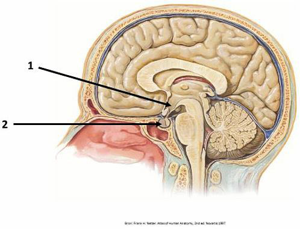
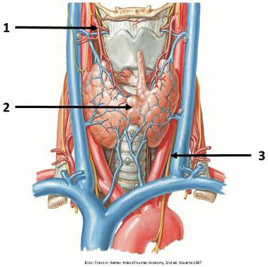
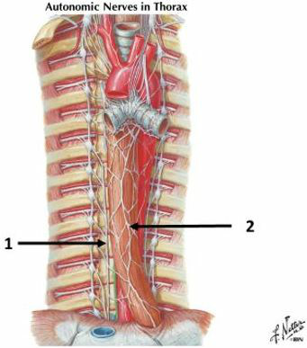
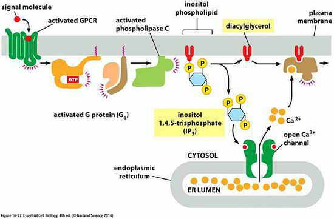

Vraag 1
Positieve feedback is een weinig voorkomend onderdeel van homeostatische controle systemen. Wat gebeurt er indien positieve feedback optreedt? Er zal dan:
Vraag 2
In afwezigheid van elke omgevingsinformatie, zal een biologisch circadiaan ritme:
Vraag 3
In een koude situatie zal je gaan rillen om de lichaamstemperatuur te verhogen. Skeletspieren worden hiertoe geïnformeerd vanuit:
Vraag 4
Baroreceptoren bevinden zich in:
1 de arteria carotis communis
2 de carotis sinus
De vuurfrequentie van (de actiepotentialen uit) de baroreceptoren neemt het meest toe door:
3 afname van de gemiddelde bloeddruk
4 toename van de polsdruk
Als de vuurfrequentie uit de baroreceptoren toeneemt dan:
5 neemt de sympathische output naar hart, arteriolen en venen toe
6 neemt de parasympatische output naar het hart toe.
Juist zijn:
1 de arteria carotis communis
2 de carotis sinus
De vuurfrequentie van (de actiepotentialen uit) de baroreceptoren neemt het meest toe door:
3 afname van de gemiddelde bloeddruk
4 toename van de polsdruk
Als de vuurfrequentie uit de baroreceptoren toeneemt dan:
5 neemt de sympathische output naar hart, arteriolen en venen toe
6 neemt de parasympatische output naar het hart toe.
Juist zijn:
Vraag 5
Het hartminuutvolume is meestal verhoogd bij
1 cardiogene shock
2 distributieve shock
De ademfrequentie is verhoogd bij
3 hypocapnie
4 shock
De meest efficiënte manier om het hartminuutvolume te optimaliseren is beïnvloeden van de:
5 preload
6 afterload
Juist zijn:
1 cardiogene shock
2 distributieve shock
De ademfrequentie is verhoogd bij
3 hypocapnie
4 shock
De meest efficiënte manier om het hartminuutvolume te optimaliseren is beïnvloeden van de:
5 preload
6 afterload
Juist zijn:
Vraag 6
Voor de adequate behandeling van shock
1 is een definitieve diagnose noodzakelijk
2 is een onderverdeling in de 4 typen shock voldoende
Preload behandeling bij shock wordt bij voorkeur uitgevoerd met:
3 volume
4 vasopressoren
Vasodilatoren kunnen een plaats hebben bij de behandeling van
5 cardiogene shock
6 obstructieve shock
Juist zijn:
1 is een definitieve diagnose noodzakelijk
2 is een onderverdeling in de 4 typen shock voldoende
Preload behandeling bij shock wordt bij voorkeur uitgevoerd met:
3 volume
4 vasopressoren
Vasodilatoren kunnen een plaats hebben bij de behandeling van
5 cardiogene shock
6 obstructieve shock
Juist zijn:
Vraag 7

Sleep de nummers naar de juiste structuur.
Sleep een optie naar de bijbehorende rij, of tik eerst op een kaart en dan op een rij.
Nummer 1
Sleep hier naartoe
Nummer 2
Sleep hier naartoe
Vraag 8

Sleep de cijfers naar de juiste structuur.
Sleep een optie naar de bijbehorende rij, of tik eerst op een kaart en dan op een rij.
Nummer 1
Sleep hier naartoe
Nummer 2
Sleep hier naartoe
Nummer 3
Sleep hier naartoe
Vraag 9

Sleep de cijfers naar de juiste structuur.
Sleep een optie naar de bijbehorende rij, of tik eerst op een kaart en dan op een rij.
Nummer 1
Sleep hier naartoe
Nummer 2
Sleep hier naartoe
Vraag 10
Uit welke twee delen van het zenuwstelsel ontspringen de parasympathische zenuwen?
Meerdere antwoorden mogelijk.
Vraag 11
Kies de juiste alternatieven.
Welk deel van de pancreas heeft een anatomisch-topografische relatie met: linkernier , duodenum .
Vraag 12
In welk deel van de bijnier wordt het hormoon noradrenaline geproduceerd?
Vraag 13
Kies de juiste alternatieven.
Kies de juiste opties: Prolactine wordt geproduceerd door cellen in de .
Vraag 14
Welke cellen produceren calcitonine in de schildklier?
Vraag 15
Welke signaleringsroute wordt door cyclisch AMP geactiveerd?
Vraag 16
Aan het einde van het practicum wordt EDTA toegevoegd aan de konijnendarm. Deze ontspant dan volledig. Wat gebeurt er in de gladde spiercellen?
Dan wordt de Ca2+ concentratie...
Dan wordt de Ca2+ concentratie...
Vraag 17
Kies de juiste alternatieven.
Wat zijn de voordelen dat steroid hormonen niet verpakt zijn in afgifteblaasjes? Steroid hormonen en .
Vraag 18
Hoe kun je vaststellen of er sprake is van primaire hormonale hyposecretie?
Vraag 19
Er is een patiënt met een goedaardige tumor in de linkerbijnierschors. Dit leidt tot afgifte van grote hoeveelheden cortisol. Wat gebeurt er met de afgifte van ACTH en CRH onder deze omstandigheden?
Vraag 20
De hypofyse bestaat uit een voor- en achterkwab met elk een eigen functie. Indien de hypofyse voorkwab niet functioneert, welke hormonen bereiken dan niet de algemene circulatie?
Vraag 21
Hypofyse achterkwab hormonen behoren tot de groep van:
Vraag 22
In welk gen worden mutaties gevonden in ongeveer 30% van alle humane kankers?
Vraag 23
Van welke signaleringsroute zie je hieronder een schematisch overzicht?

Vraag 24
Mivacurium behoort tot de groep van niet-depolariserende neuro-musculaire blokkers. Mivacurium wordt onder meer gebruikt voor het induceren en onderhouden van spierverslapping tijdens chirurgische ingrepen. Op welk moleculair-farmacologisch mechanisme is de werking van mivacurium gebaseerd bij deze toepassing? Mivacurium:
Vraag 25
Moclobemide behoort tot de groep van monoamine oxidase (= MAO) remmers. Van moclobemide is bekend dat het ernstige bijwerkingen kan veroorzaken die gebaseerd zijn op directe invloed van deze verbinding op de noradrenerge neurotransmissie in het sympathisch zenuwstelsel. Wat is het directe moleculair-farmacologisch effect van moclobemide in het sympathisch zenuwstelsel? Moclobemide:
Vraag 26
Kies de juiste alternatieven.
Kies de juiste opties: Acetylcholine is een neurotransmitter in neuronen in het sympathisch zenuwstelsel. Acetylcholine heeft een lage bindingsaffiniteit voor .
Vraag 27
Waar leidt stimulatie van β2 receptoren toe?
Vraag 28
Waar leidt stimulatie van β1 receptoren toe?
Vraag 29
Waar leidt stimulatie van α2 receptoren toe?
Vraag 30
Waar leidt remming van de parasympaticus toe?
Vraag 31
Wat zijn effecten van muscarine agonisten?
Vraag 32
Welke twee enzymen zijn betrokken bij de synthese van Noradrenaline?
Vraag 33
De release van noradrenaline door noradrenerge zenuwen staat onder invloed van presynaptische regulatie. Activatie van welke genoemde presynaptische receptoren remt de afscheiding van noradrenaline?
Vraag 34
Kies de juiste alternatieven.
Gekweekte hartspiercellen worden gebruikt om te onderzoeken of twee verschillende farmaca (X en Y) de aanmaak van de second messenger cyclisch AMP (cAMP) beïnvloeden door binding aan de beta-1 adrenoceptor. Van beide farmaca is bekend dat zij met hoge selectiviteit binden aan de beta-1 adrenoceptor. Toediening van farmacon X stimuleert de cAMP aanmaak concentratie-afhankelijk (EC-50 van 10 nM). Farmacon Y heeft geen effect op de aanmaak van cAMP, maar wanneer tegelijkertijd toegediend schuift de concentratie-effect curve van farmacon X parallel naar rechts. Farmacon Y bindt aan de beta-1 adrenoceptoren met een affiniteit (=Kd) van 1 nM. Op basis van deze gegevens komt u tot de conclusie dat farmacon Y een antagonist is en een effectiviteit (=efficacy) heeft in vergelijking tot farmacon X.
Vraag 35
Kies de juiste alternatieven.
Kies de juiste opties: In de farmacologie wordt de term antagonist gebruikt voor het beschrijven van biologisch chemische verbindingen, die na binding aan hun receptor deze activeren.
Vraag 36
Kies de juiste alternatieven.
Pancuronium is een nicotine receptor antagonist. Nicotine receptoren behoren tot de categorie van en op cel niveau wordt het onmiddellijke effect van pancuronium dan ook voornamelijk verklaard door verandering van de .
Vraag 37
Vier geneesmiddelen worden bij muizen apart intraveneus toegediend in oplopende doseringen en onderzocht op hun effect op de galproductie door de lever. Bekend is dat het effect veroorzaakt wordt door activatie van hetzelfde type receptor op levercellen met een vergelijkbare effectiviteit (=efficacy). Welke farmacologische parameter wordt bij dit onderzoek bepaald uit de resultaten om de potentie (potency) van de toegediende stoffen met elkaar te kunnen vergelijken?
Vraag 38
Kies de juiste alternatieven.
UDP-glucuronyl transferases behoren tot de groep van biotransformatie enzymen en spelen, onder meer, een belangrijke rol bij het metabolisme van geneesmiddelen. Op basis van deze informatie is het juist om te concluderen dat glucuronyl transferases in de lever tot expressie zullen komen en de vetoplosbaarheid van hun substraten .
Vraag 39
De heer J. (34 jaar oud; gewicht 77 kg; lengte 1.88 m) wordt in subcomateuze toestand gepresenteerd op de spoedeisende hulp (SEH). Naast zijn bed is een pak fenobarbital tabletten gevonden; er wordt een overdosering vermoed. Fenobarbital is een zwak zuur met een pKa van ongeveer 7.5. Het stimuleren van de renale excretie kan een onderdeel vormen van de behandeling. De pH van de urine blijkt 5.8 te zijn.
Om de renale excretie van fenobarbital bij de heer J. te bevorderen zal de behandelend arts besluiten om therapie in te stellen met als doel om de:
Vraag 40
Welke van de volgende hormonen blokkeert het metabole proces van de gluconeogenese?
Vraag 41
Wat wordt in het bloed gevonden van een gezond persoon die de schildklier-remmer methimazol ingenomen heeft?
Vraag 42
Bij een patiënt wordt een symmetrisch vergrootte schildklier gevonden en verhoogde bloedspiegels van T3 en T4. Waardoor wordt dit veroorzaakt?
Vraag 43
Bij een patiënt met een klinische hyperthyreoïdie worden verhoogde plasmawaarden gevonden van vrij T4 en TSH. De oorzaak van de hyperthyreoïdie is het meest waarschijnlijk gelegen in:
Vraag 44
U stelt bij een patiënte het syndroom van Cushing vast. Welk van onderstaande bevindingen kan bij dit syndroom worden gezien?
Vraag 45
Welke cellen/factoren zorgen voor de destructie van de bètacellen bij mensen met type 1 diabetes?
Vraag 46
Welke maat geeft bij mensen met diabetes type 1 het beste inzicht in hun dagelijkse glucose regulatie?
Vraag 47
Welke is de meest voorkomende tumor in de schildklier?
Vraag 48
Amenorroe, galactorroe, verlies van libido en infertiliteit zijn symptomen van welke type hypofyse macroadenoom?
Vraag 49
Welke van de volgende microscopische beelden worden gevonden bij de ziekte van Addison?
Vraag 50
Gluconeogenese wordt zowel door interne metabolieten als door hormonen (insuline en glucagon) gereguleerd. Hoe gaat de regulatie van Fructose 1,6-biphosphatase (FBPase-2) door glucagon in zijn werk?
Vraag 51
Type I diabetes lijkt sterk op vasten. Wat is het belangrijkste metabole verschil tussen diabetes type I en vasten?
Vraag 52
Casus Mevrouw De Wijs. Mevrouw De Wijs is in consult bij haar huisarts. Tijdens de klachtinventarisatie denkt de huisarts even goed na en stelt vervolgens: “Dus u heeft vooral last van de aanhoudende hoofdpijn. Klopt dat?”
Welke structurerende vaardigheid past de huisarts hier toe?
Vraag 53
Casus Mevrouw De Wijs (vervolg). Mevrouw De Wijs is in consult bij haar huisarts.
Mevrouw De Wijs blijkt tijdens het consult erg breedsprakig te zijn. Is het in dergelijk geval verstandig als de arts direct overgaat op meer gesloten vragen om de breedsprakigheid te beteugelen?
Vraag 54
Wat is het beoogde effect van pegvisomant bij de behandeling van acromegalie?
Vraag 55
Welk type vitamine D supplement moet een patiënt met nierfalen en daarvoor dialyse in ieder geval gebruiken?
Vraag 56
Welke van onderstaande hormonen draagt, bij een overproductie, bij aan het ontstaan van osteoporose?
Vraag 57
Een 54-jarige patiënt komt bij u in verband met diabetes mellitus type II. U heeft eerder leefstijladviezen gegeven, deze hebben tot nu toe onvoldoende effect. Ook metformine en gliclazide in maximale dosering lijkt onvoldoende te werken. Zijn nuchter gemeten glucosewaarde is nu 14.3 mmol/L en de HbA1c-waarde is 62 mmol/mol. De eGFR is normaal (>90ml/min). De BMI is 36.1 kg/m2. Patiënt werkt als taxichauffeur.
Wat is de meest aangewezen medicamenteuze therapie?
Vraag 58
Een vrouw van 22 jaar komt bij de huisarts omdat ze gisteren is flauwgevallen. Ze vertelt dat ze lange tijd in een volle trein moest staan. Op een gegeven moment voelde ze zich raar worden en vrijwel direct daarna viel ze flauw. Ze liet haar urine lopen. Volgens omstanders liep ze blauw aan. Toen ze wakker werd bleek ze op haar tong gebeten te hebben. De wegraking duurde ongeveer vier minuten.
Welke twee verschijnselen zijn een sterke aanwijzing voor een epileptisch insult?
Meerdere antwoorden mogelijk.
Vraag 59
Een man van 70 jaar is bij de huisarts op consult omdat hij is flauwgevallen. Tijdens de anamnese komen de volgende punten naar voren:
1. Het gebeurde toen hij ’s nachts ging plassen.
2. Hij voelde zich twee-drie seconden duizelig en viel toen neer.
3. Hij is volgens zijn echtgenoot twee minuten buiten bewustzijn geweest.
4. Hij was tijdens het bewustzijnsverlies heel erg bleek.
1. Het gebeurde toen hij ’s nachts ging plassen.
2. Hij voelde zich twee-drie seconden duizelig en viel toen neer.
3. Hij is volgens zijn echtgenoot twee minuten buiten bewustzijn geweest.
4. Hij was tijdens het bewustzijnsverlies heel erg bleek.
Waarom is verdere cardiologische analyse niet nodig?
Cardiologische analyse is niet nodig vanwege de informatie uit punt:
Cardiologische analyse is niet nodig vanwege de informatie uit punt: